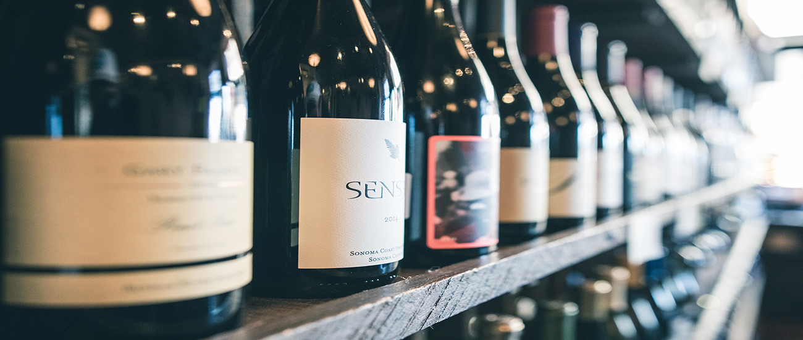

Gennaro's Grill and Garden

Full Bar and Extensive Wine List
Champagne
-
G.H. Mumm Brut Cordon Rouge ~ France 80
-
Perrier Jouet ~ Nuit Blanche ~ France 95
-
2003 Dom Perignon ~ France 280
California Sparkling
-
Brut Classic Chandon ~ Napa Valley 50
-
Italian Rose Lamberti 25
Italian Sparkling
-
Prosecco ~ Caposaldo ~ Veneto 26
-
Massolino Moscato d'Asti ~ Serralunga d'Alba 24
Italian White
-
Vermentino ~ La Cala ~ Sicilia 21
-
Batasiolo ~ Gavi ~ Novi Liquer 24
-
Villa Antinori ~ Toscana 26
-
Pio Cesare Gavi ~ Alba 40
Spanish White
-
Albarino Valinas ~ Ramon Bilbao 24
-
Stephen Ross ~Edna Valley 24
-
Tolosa ~ Edna Ranch 35
-
Mattina Fiori Estate ~ santa Maria Valley 60
-
Wolff ~ Edna Valley 35
-
Talley ~ Arroyo Grande 48
Sauvignon Blanc
-
L'Aventure Rose Paso Robles 40
-
The Fableist Central Coast 38
-
Cakebread ~ Napa Valley 40
-
Grassi ~ Happy Canyon 42